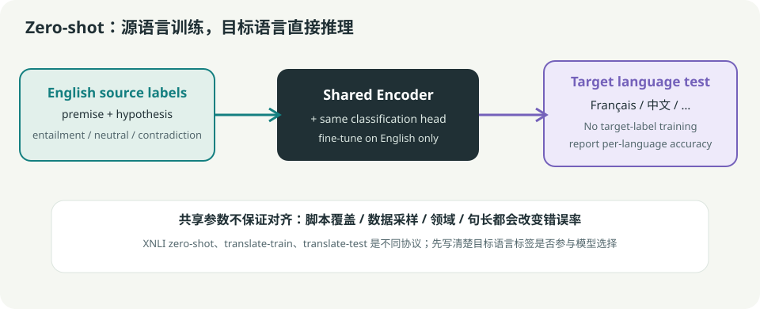

1. 只用英语标签，能不能识别法语与中文
假设训练集只有英语句子与三分类标签（蕴含、矛盾、中立），希望模型部署到法语、中文和印地语文本。最直接的做法是让不同语言都使用同一个 Encoder 与分类头：在英语上反传监督损失，在其他语言上直接推理。这里并没有神奇的“翻译开关”，成功与否取决于预训练时的跨语言共享、任务语义、脚本与词表覆盖，以及领域分布是否相似。

与其把“能处理 100 种语言”理解为“100 种语言效果相同”，更合适的理解是：模型在一个共享的参数空间中接收多语言文本，但训练数据比例、语言形态、脚本、任务分布决定了每种语言的误差。
2. mBERT：共享参数、共享 WordPiece、维基百科数据
Google 发布的 Multilingual BERT (mBERT) 具有 104 语言的 cased BERT-Base checkpoint，采用 12 层、768 隐藏维度、12 个注意力头、约 110M 参数。它从多语言 Wikipedia 中学习，以统一的 WordPiece 词表和 Encoder 参数处理不同语言。
关键不是“把所有文字翻译成英语”，而是不同语言的 token 都进入同一个嵌入表和深层注意力网络，MLM 目标在各语言文本上更新共享参数。跨语言迁移可能由词汇重叠、数字和实体、共享子词、结构与语义模式共同支持。
但对完全不同文字系统的语言，子词重叠可能很少。mBERT 依旧可能呈现一定迁移，这说明“词表重叠是唯一原因”的解释过于狭窄；不过也不能由此推断共享参数自动产生完美的语言对齐。
3. 为什么不能按 Wikipedia 字数直接抽样
假设英语训练文本比某个低资源语言多 100 倍。若按原始数据比例采样，英语可能在有限训练预算内占据大量更新，低资源语言几乎没有足够的学习机会。mBERT 官方说明采用指数平滑采样，平滑指数 S=0.7：
其中 n_ℓ 表示该语言训练数据量，分母让所有语言采样概率归一化。若只有两种语言，数据量比 100:1，在 α=1 的不平滑采样下比例仍是 100:1；用 α=0.7 后约为 25.1:1；若 α=0 则趋近 1:1。这些比例是数学算例，不是 mBERT 对某两种语言的真实数据份额。它们由 examples/encoder_budget_lab.py 的 language_sampling 计算，并由 tests/test_encoder_budget_lab.py 断言。
平滑的代价也明显：小语种虽然被更多采样，却可能反复看到同一批文档；过度提升小语种采样会增加过拟合和训练分布偏差。因此采样温度应结合有效语料量、语言覆盖和下游质量调节。
4. XLM-R：比 mBERT 更大的多语言语料与新的 tokenizer
Conneau 等人的 XLM-R 使用来自 CommonCrawl 的过滤后 CC-100 语料，覆盖 100 种语言、总计约 2.5 TB 文本，并采用约 250K 的 SentencePiece 子词词表。Base/Large 模型大小不同，不能将一个版本的评测数字任意转移到另一个版本。
原论文报告 XLM-R 在跨语言基准上相较 mBERT 有显著收益，例如摘要给出 XNLI 平均准确率增加 14.6 个百分点、MLQA 平均 F1 增加 13 个百分点、NER F1 增加 2.4 个百分点。这是论文指定比较和评测协议下的结果，不表示任意 checkpoint、任意语言组合都有同样的增益。
| 维度 | mBERT（cased 原始版本） | XLM-R（原始论文） |
|---|---|---|
| 语言覆盖 | 104 种 | 100 种 |
| 主要数据 | Wikipedia | 过滤后的 CommonCrawl / CC-100 |
| Tokenizer | 共享 WordPiece | 共享 SentencePiece 子词 |
| 语料量描述 | 各语言 Wikipedia 规模不等 | 约 2.5 TB 文本（不是 2.5T tokens） |
| 训练目标 | BERT 风格的 MLM（原始配置细节依 checkpoint） | MLM，RoBERTa 式改进配方 |
5. Zero-shot transfer：训练集、验证集和测试语言要如何定义
Translate-train：将英语训练标签样本翻译为目标语言再训练，已经使用目标语言训练输入；translate-test：将目标语言测试句子翻译到训练语言再预测；zero-shot：只用源语言标签做微调，直接在目标语言原文上推理。三者输入分布、系统成本和翻译误差不同，不能混入一个“零样本分数”。
以 XNLI 为例，模型可以在英语 NLI 训练集上微调，随后在 XNLI 的多语言 test split 上评估准确率。若使用目标语言 dev 标签选择 checkpoint 或阈值，则严格意义上它已引入目标语言监督用于模型选择；应在报告中明确写为多语言 dev selection，而不应声称完全没有目标语言标签参与流程。
# 示例：零样本分类推理的接口，不是已训练的跨语言模型
from transformers import AutoTokenizer, AutoModelForSequenceClassification
checkpoint = "FacebookAI/xlm-roberta-base"
tokenizer = AutoTokenizer.from_pretrained(checkpoint)
# model = AutoModelForSequenceClassification.from_pretrained(checkpoint, num_labels=3)
# 先在英语训练集微调 model，保存 checkpoint；不执行目标语言训练。
inputs = tokenizer(
["This agreement is valid.", "Cet accord est valide.", "这份协议有效。"],
padding=True, truncation=True, max_length=128, return_tensors="pt"
)
print(inputs["input_ids"].shape) # [3, padded_length]直接加载未微调的 AutoModelForSequenceClassification 可能只得到随机初始化的分类头。上面代码仅展示输入编码，不是 XNLI 零样本性能复现。实际实验还需要正确的 3 类标签映射、数据预处理、固定 checkpoint revision 和每种语言的评估脚本。
6. 共享词表不等于语言对齐
共享子词词表降低了建立多套模型的工程成本，但它也可能形成容量竞争：当不同语言、文字系统与领域都要共享有限参数时，低资源语言可能得不到足够表示容量。XLM-R 论文讨论了训练语言数量增加时的 curse of multilinguality，以及适当扩大容量与平衡采样的作用。
跨语言可迁移也不代表相同语言能力。NER 中专名边界和字形差异、形态丰富语言的子词碎片化、句法次序、文化知识及领域术语都可能影响下游质量。共享表示应被视为一种可检验的迁移假设，而不是翻译等价性的保证。
对中文与英文混合业务，还要特别检查 tokenizer 的规范化、标点、数字、emoji、英文缩写和中英代码混合。不要把英文 WordPiece 的前缀符号当作所有多语言 tokenizer 的规则。
7. 如何设计一个公平的多语言评估表
- 固定同一个目标任务、训练数据 split、标签体系与每种语言的 test 数据；避免将翻译标签的训练集与未经翻译的测试集混淆。
- 同时报告逐语言指标、macro average、最低表现语言，不只报告全语言均值。
- 记录 tokenizer、checkpoint、词表、最大长度和截断率。对于某些语言，序列比相同字数的英语更长，截断率会影响准确率。
- 按语言文字系统、训练语料量、领域与句长做误差分层；评估代码切换或混合语言样本。
- 如果目标语言有少量标注，单独报告 few-shot 方案，与纯零样本结果清楚区分。
英文与非英文测试集的标注分布也可能不一样。因此对一条跨语言迁移曲线，解释必须覆盖数据构成，而不只是“模型架构具有多语言能力”。
8. 交互：采样指数如何改变大语种和小语种比例
两种语言，原始语料 100:1
输出是比例公式计算，未运行多语言训练。
原始比例 100:1；α=1.0 时采样比仍为 100:1。 大语种约占 99.01%，小语种约占 0.99%。
9. 交互二：迁移协议与语料单位账本
三个状态分别核对零样本、translate-train 与 XLM-R 论文报告的数字口径。它们只是把论文给定条件重新列出，不重新运行任何多语言训练。
协议与报告数字
固定引用论文条件，切换查看口径。
Zero-shot：仅源语言标签做微调，目标语言人工标签数为 0。 测试输入为目标语言原文；若用目标语言 dev 选 checkpoint，则不再是严格零样本。 这是协议定义，不是某语言的准确率。
关键结论
- mBERT 和 XLM-R 依靠共享参数进行多语言 MLM 预训练；共享词表本身不保证跨语言语义完全对齐。
- 语言采样指数能平衡高低资源语言，但也改变重复采样风险。
- XLM-R 的 2.5 TB 指语料字节，不可误读为 2.5T token。
- Zero-shot、translate-train、translate-test 的评估协议与目标语言标签使用情况必须分别说明。
原始资料与实现
- Google Research, Multilingual BERT README（104 语言和 S=0.7 采样）。
- Conneau et al., Unsupervised Cross-lingual Representation Learning at Scale, §2–4（CC-100、语言覆盖、XNLI/MLQA/NER）。
- Conneau et al., XNLI: Evaluating Cross-lingual Sentence Representations（评测任务与语言）。
- Hugging Face, XLM-R Base model card（tokenizer 与 checkpoint）。